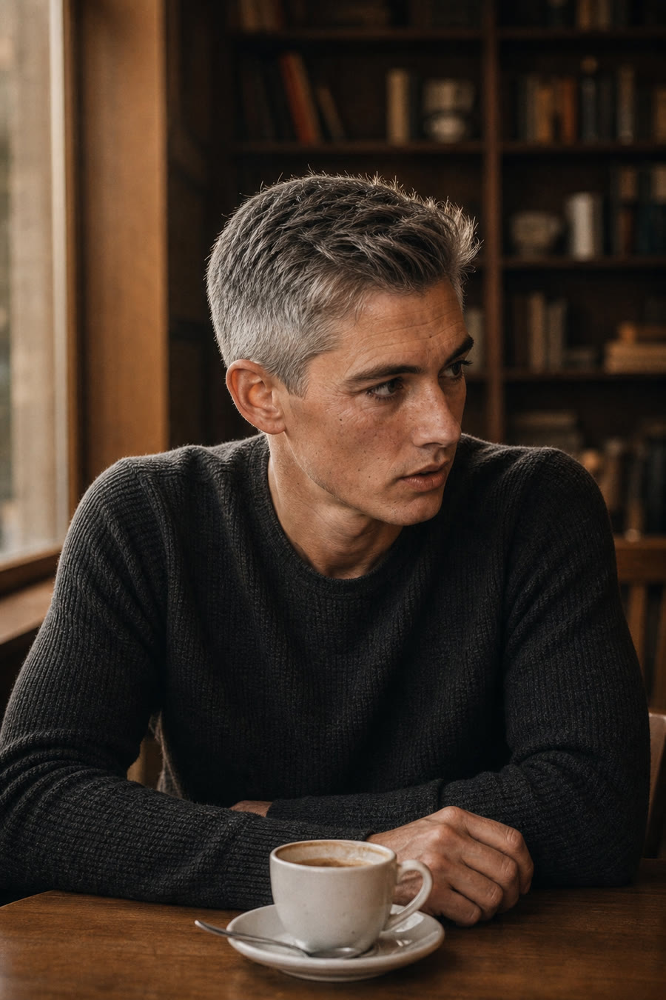

Your own voice and face, decades from now. Grounded in your real life.
Meet your future self →
A short interview, one question at a time. It listens the way no feed ever does, and builds a private picture of who you actually are.
Add a selfie and see your own face, years on. The person who already lived through what you are deciding now.
A grounded conversation in your own aged voice. It remembers, and it is allowed to disagree with you.
No feed, no followers, nobody watching. The voice on the other side is you, so honesty is the whole point. This is the one place you can stop wearing the mask.
A text future self, one aged photo, and memory that carries between conversations.
Your cloned voice, deeper memory, and messages you can time-lock to arrive years from now.
A living, age-progressed face in real time. And a voice that stays, so your family can still ask you, after you are gone.